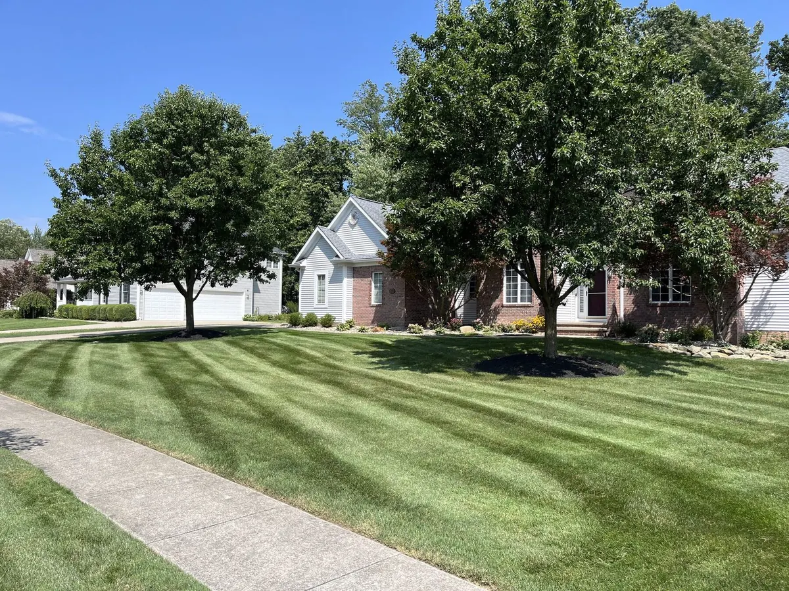

How to tell your lawn is done growing, the right height to leave it at under Northeast Ohio snow, and the three late-fall steps that pay off in April.

“When do you stop mowing?” is one of the most common questions we get in October. The answer is not a date — it is a growth rate. But the way you handle those last few cuts does more for next spring’s lawn than almost anything you do in May.
Lawns in Aurora, Chagrin Falls, and the rest of our area are cool-season grasses: tall fescue, Kentucky bluegrass, and perennial ryegrass. They keep growing well into fall — October is actually one of their strongest months for root growth. Top growth slows sharply once soil temperatures fall below about 50°F, and nearly stops after a string of hard frosts.
In a typical year here, that puts the final mow somewhere between late October and mid-November. Portage County properties around Aurora often run a week or so later than Geauga County hilltops in Auburn and Bainbridge, where it gets colder sooner.
This is where people go wrong in both directions.
Long grass flops over and mats down under the first wet lake-effect snow. That damp, matted layer is ideal for snow mold — the gray or pink crusty circles you find in March when the snow melts. It also gives voles cover to tunnel across the lawn all winter, leaving those winding brown trails.
Scalping the lawn for winter stresses the plant right before dormancy, exposes the crown to cold and drying wind, and opens room for weeds in spring. It also does not help: you have not “saved a mow,” you have damaged the grass.
For most lawns here, finishing around 2.5 inches is the sweet spot — short enough to stand up under snow, tall enough to protect the crown. Get there gradually. If you have been mowing at 3.5 inches all summer, drop the deck about half an inch per mow over the last two or three cuts. Never remove more than a third of the blade at once.
A blanket of wet maple and oak leaves under snow does the same thing long grass does, only worse. It smothers the turf and invites snow mold. A light layer can be mulched straight into the lawn with the mower — that is free organic matter for our heavy clay. A thick layer needs to be removed. Plan the last mow to coincide with the last big leaf drop so you are not cleaning up twice.
If you are not sure when that is, our guide to timing your fall cleanup in Aurora covers the leaf-drop calendar.
Applied around the last mow — when top growth has stopped but the grass is still green — a late-fall nitrogen feeding is stored in the roots and gives you earlier, thicker green-up in spring. Follow label rates and keep fertilizer off pavement, where it washes into storm drains and eventually the Chagrin and Cuyahoga watersheds. Never apply to frozen ground.
Before the ground freezes, push driveway markers in along the edges of the drive and any walks a plow or snowblower will follow. It is far easier in late October than it is when the ground is rock hard in December.
Hoses, toys, furniture, and fallen branches left out over winter leave dead rectangles and circles in spring. Pick up the lawn completely before the first snow.
Usually between late October and mid-November in Aurora, Chagrin Falls, and the surrounding area. The real signal is growth, not the calendar: once grass grows less than about half an inch a week after a few hard frosts, the next cut is your last.
About 2.5 inches for most tall fescue, bluegrass, and ryegrass lawns. Drop the deck gradually over the final two or three mows instead of scalping it all at once, and never remove more than a third of the blade in one cut.
Grass left at four inches or more tends to mat down under snow, which encourages snow mold and gives voles cover to tunnel. A moderate 2.5 to 3 inch height is the safer target in a snowy region like Geauga County.
No. Frozen blades break and the mower and your footsteps leave brown tracks. Wait until the frost has burned off, usually by late morning on a sunny November day.
We finish the season properly for homeowners in Aurora, Chagrin Falls, Bainbridge, South Russell, and Auburn — final mows at the right height, leaf removal, and beds put to bed.
Get a Free Estimate